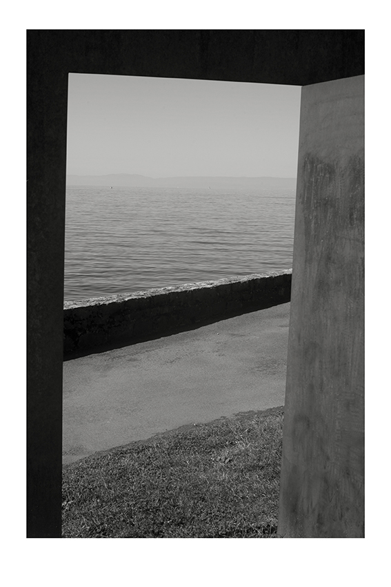
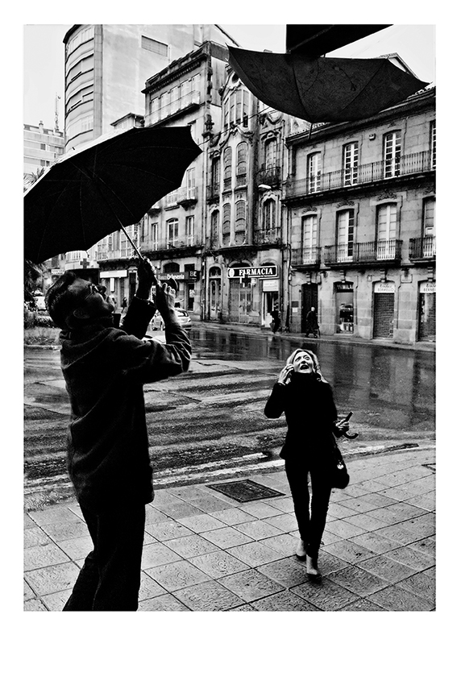
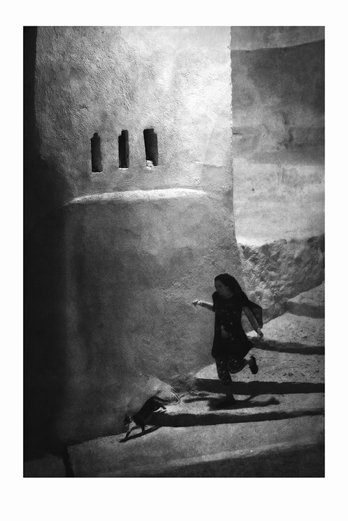
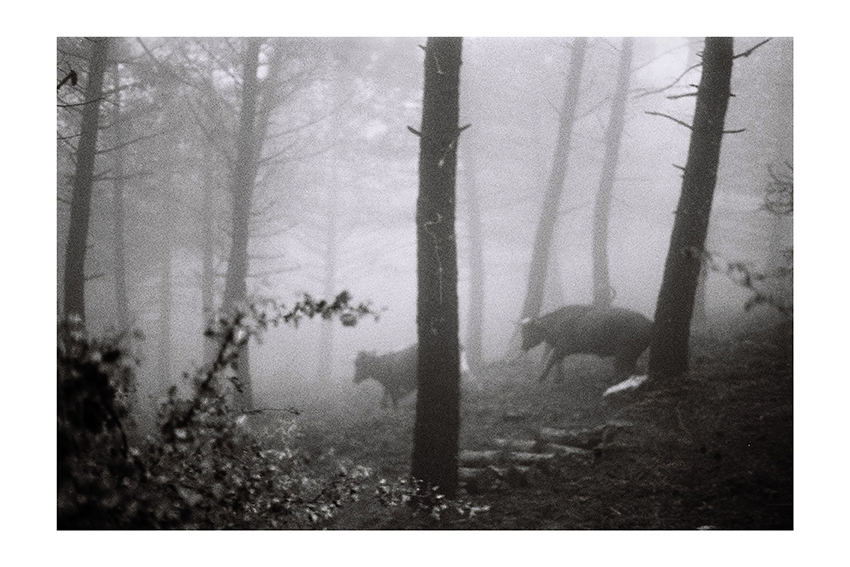
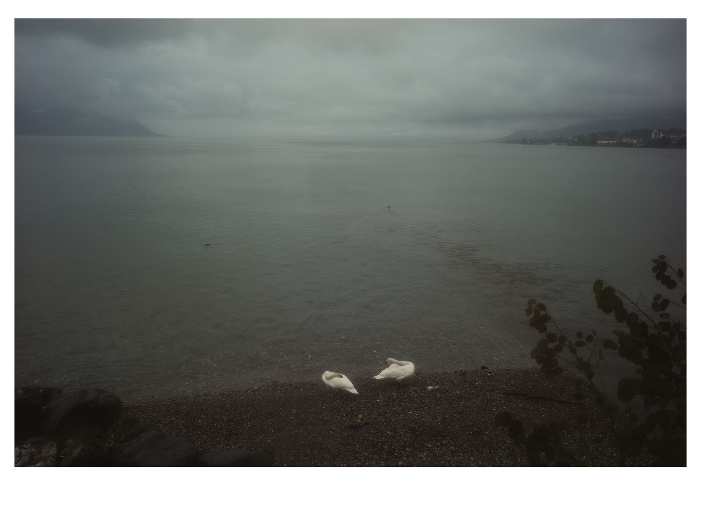

Cada copia se realiza únicamente por encargo mediante impresión pigmentada sobre Hahnemühle Museum Etching 350 g/m², un papel FineArt de algodón reconocido por su extraordinaria riqueza tonal, su textura delicada y su estabilidad de conservación. Su superficie, ligeramente cálida y mate, acompaña el carácter contemplativo de estas fotografías y permite apreciar con naturalidad la profundidad de los negros y la suavidad de las luces. Las fotografías digitales se producen mediante impresión pigmentada FineArt. En el caso de algunas imágenes realizadas en película de 35 mm, la copia será positivada personalmente en laboratorio químico.
El procedimiento de realización de cada obra —impresión FineArt o positivado químico— se indica siempre en la ficha de cada fotografía.

El umbral
Montreux 2025 · Fotografía digital · Fine Art Print · Hahnemühle Museum Etching · 20 × 30 cm
Firmada por el autor · 90 €

Le vent nous portera
Ourense 2014 · Fotografía digital · Fine Art Print · Hahnemühle Museum Etching · 20 × 30 cm
Firmada por el autor · 90 €

EL SUEÑO DE SHEREZADE
Chauen 2010 · Fotografía digital · Fine Art Print · Hahnemühle Museum Etching · 20 × 30 cm
Firmada por el autor · 90 €

EL BOSQUE DE ASTERIÓN
Grazalema 2016 · 35 mm · Ilford HP5 Plus 400 · Fine Art Print · Hahnemühle Museum Etching · 20 × 30 cm
Firmada por el autor · 90 €

El lago de Leda
Montreux 2026 · Fotografía digital · Fine Art Print · Hahnemühle Photo Rag 308 · 20 × 30 cm
Firmada por el autor · 90 €